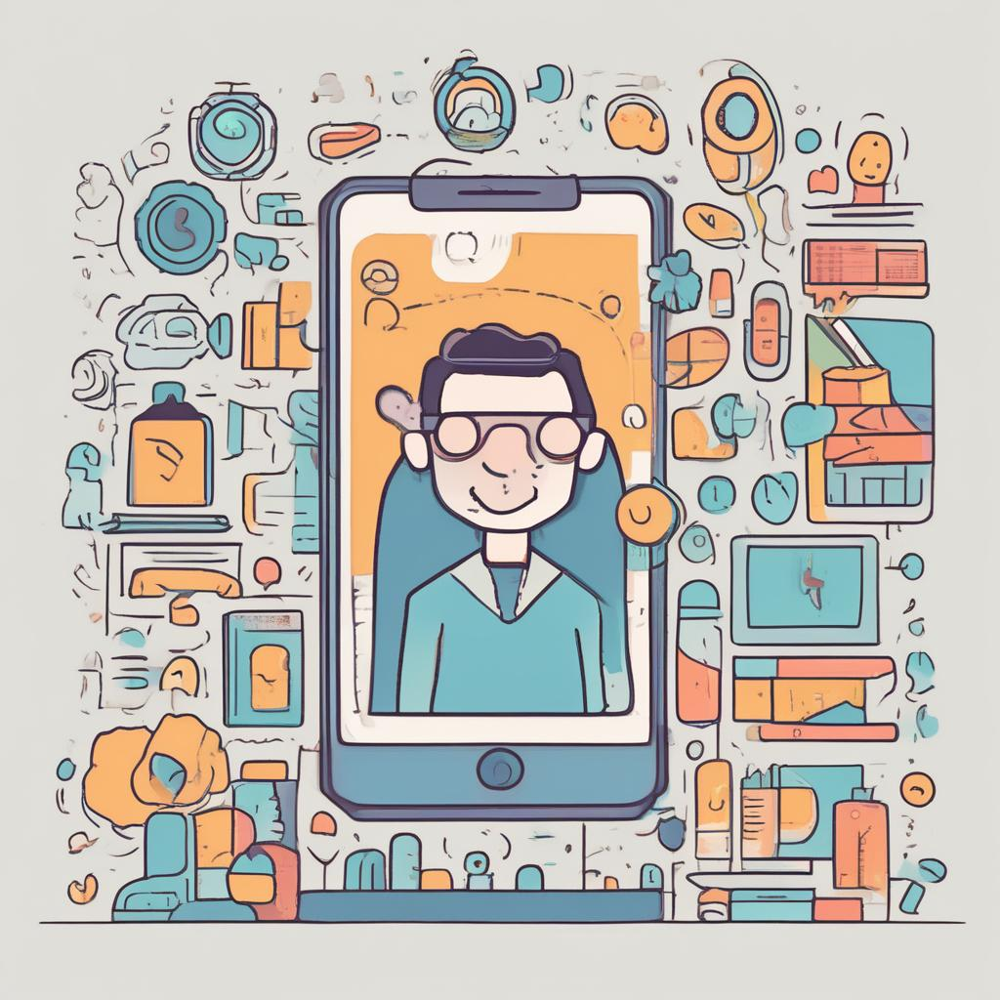

¿Cómo afecta el uso del móvil antes de dormir?
El uso de dispositivos móviles antes de dormir interfiere en la calidad del sueño debido a la luz azul que emiten, lo que reduce la producción de melatonina, la hormona responsable del sueño. Esto puede generar problemas como insomnio, disminución del rendimiento académico, ansiedad y otros trastornos psicológicos.

Consejos para mejorar el sueño
- Evitar el uso de dispositivos electrónicos al menos dos horas antes de acostarse.
- Mantener un horario regular de sueño.
- Crear un ambiente adecuado para dormir: sin luces brillantes ni ruido.
- Realizar actividades relajantes como leer un libro o meditar.
Referencias científicas
El uso excesivo de dispositivos digitales está relacionado con la disminución de la calidad del sueño y con la aparición de trastornos como el insomnio. La luz azul que emiten estos dispositivos afecta el ritmo circadiano y la producción de melatonina.
Fuente: Gaceta UNAM (2023)